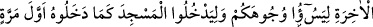
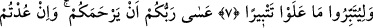
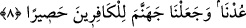

CEZALANDIRMA
ZAMANI GELİNCE
7. Eğer iyilik ederseniz kendinize iyilik etmiş, kötülük ederseniz yine kendinize
etmiş olursunuz. Artık diğer cezalandırma zamanı gelince, yüzünüzü kara etsinler,
daha önce girdikleri gibi yine Mescid’e (Süleyman Mâbedi’ne) girsinler ve ellerine
geçirdikleri her şeyi büsbütün tahrip etsinler (diye, başınıza yine düşmanlarınızı
musallat kıldık).
8. Belki Rabbiniz size merhamet eder; fakat siz eğer yine (fesadcılığa)
dönerseniz, biz de sizi yine cezalandırırız. Biz cehennemi kâfirler için bir hapishane
yaptık.
“Eğer iyilik ederseniz kendinize iyilik etmiş, kötülük ederseniz yine kendinize etmiş
olursunuz.” Yâni iyi ameller de kötü ameller de size âiddir, sevâbı ve vebâli başkasına
geçmez.
Neysâbûrî Tefsîri’nde der ki: İşâret ehli demiştir ki: Allah, ‘iyilik etme’yi tekrar etti,
‘kötülük etme’yi ise ancak bir kez zikretti. Bunda rahmet tarafının daha galib olduğuna
delâlet vardır. Kötülük etmeyi iyi görmediği için de tekrar etmemiş olabilir.
“Artık diğer cezalandırma zamanı gelince,” bu iki fesadcılıktan sonuncusuna vaad
edilen cezânın vakti gelince 202 sene yaptıklarınızdan dolayı “yüzünüzü kara etsinler,”
yâni, keder ve üzüntü izlerini yüzlerinize aksettirmeleri için onları gönderdik. Burada
“yüzünüzü” kelimesi ile hakîkî mânâsı kasdedilmiştir. Çünkü kalbdeki nefsânî
değişmelerin eserleri yüze akseder.
el-Kevâşî’de der ki: Kara ve kötü olmak “yüzler”e tahsîs edilmiştir. Bununla o
yüzlerin sâhipleri kasdedilmiştir. Çünkü üzüntü ilk olarak yüzlerde görülür.
“Daha önce girdikleri gibi yine Mescid’e” Mescid-i Aksa’ya “girsinler ve ellerine
geçirdikleri her şeyi büsbütün tahrip etsinler” istilâ edip ele geçirdikleri her şeyi
anlatılamayacak şekilde harab edip tamamen yok etsinler diye başınıza yine
düşmanlarınızı musallat kıldık.
Kâşifî der ki: Hak Teâlâ, Tevrât’ta bu iki cezâyı vaad ettikten sonra onlara şöyle
buyurmuştu: